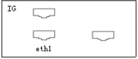
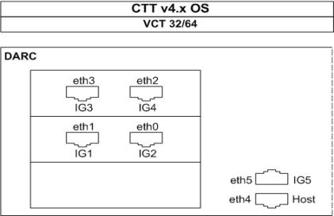

Operating Documentation
Direction 5193575-800, Rev# 5
LightSpeed 7.X Service Information - Adv
Operating Documentation |
| Last Revised on: | March 9, 2005 |
The Ethernet assignments and associated IG node connections are shown below:
Illustration 1: IG Node Ethernet 1 Port Location

Illustration 2: VDARC Node Ethernet Reference to IG/Host Port Connections

DARC node Ethernet port 1 connects to IG1 node Ethernet port 1
DARC node Ethernet port 0 connects to IG 2 node Ethernet port 1
DARC node Ethernet port 3 connects to IG 3 node Ethernet port 1
DARC node Ethernet port 2 connects to IG 4 node Ethernet port 1
DARC node Ethernet port 5 connects to IG 5 node Ethernet port 1
DARC node Ethernet port 4 connects to HOST COMPUTER Ethernet port C